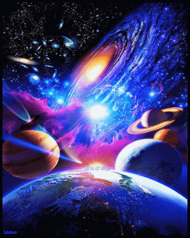

O que é o Universo?
Em noites sem lua, em locais pouco iluminados por casas, ruas e edifícios,
podemos ver uma infinidade de pequenos pontos luminosos no céu: são as estrelas. Ao observar
o céu a olho nú, conseguimos ver uma parte mínima do que chamamos de Universo. Já na observação
do céu feita com o auxílio de um telescópio, é possível perceber que o número de corpos celestes
é muito maior e também pode-se ver detalhes das formas e da cor dos astros. A atmosfera da Terra,
contudo, limita a atuação dos telescópios terrestres, por este motivo são utilizados telescópios
espaciais, como o telescópio Hubble, para as pesquisas astronômicas mais sofisticadas. Além destes
instrumentos para o estudo do Universo, os cientistas contam com equipamentos de informática para
cálculos, tratamento de dados e imagens recebidas dos telescópios, simulações etc.

Principais elementos do Universo
Os corpos celestes mais relevantes que fazem parte do universo são:
•Planetas: corpos sólidos e arredondados que não possuem luz e calor próprios. No entanto, cada planeta apresenta
uma gravidade própria, os quais giram em torno de uma estrela.
•Galáxias: conjunto de planetas, estrelas e gases. O universo tem aproximadamente 100 bilhões de galáxias.
Vivemos na galáxia denominada de Via Láctea, onde está o sistema solar.
•Cometas: corpos celestes que possuem pouco massa e órbitas irregulares. O mais conhecido é o Cometa Halley.
•Estrelas: corpos celestes esféricos formado de plasma e que possuem luz e calor próprio, por exemplo, o Sol.
•Satélites: classificados em satélites naturais e satélites artificiais, os satélites são corpos celestes sólidos
que orbitam os planetas. O satélite natural mais conhecido é a Lua e o artificial é o satélite Sputnik.
Suas propriedades:
O espaço-tempo do Universo é geralmente interpretado a partir de uma perspectiva euclidiana,
onde o espaço é constituído por três dimensões e o tempo consiste de uma dimensão, a "quarta dimensão".
Ao combinar espaço e tempo em uma única variedade chamada espaço de Minkowski, os físicos simplificaram
várias teorias da física, bem como descreveram de forma mais uniforme o funcionamento do Universo nos
níveis supergaláctico e subatômico.
O Universo parece ter muito mais matéria do que antimatéria, uma assimetria possivelmente relacionada com as
observações da violação CP. O Universo também parece não ter Momento linear ou angular. A ausência de carga
líquida e impulso resultaria das leis físicas aceitas (lei de Gauss e da não divergência do pseudotensor
energia-estresse-momento, respectivamente) se o Universo fosse finito.

Forma
A relatividade geral descreve o espaço-tempo como curvado e dobrado pela massa e pela energia. A topologia ou geometria do
Universo inclui a geometria local no Universo observável e geometria global. Os cosmólogos trabalham frequentemente com uma
fatia do espaço-tempo chamada de coordenadas comóveis. A seção do espaço-tempo que pode ser observada é o cone de luz traseiro,
que delimita o horizonte cosmológico (também chamado de horizonte de partículas ou de luz), que é a distância máxima a partir da
qual as partículas podem ter viajado para o observador na idade do Universo. Este horizonte representa a fronteira entre as
regiões observáveis e as não observáveis do Universo. A existência, as propriedades e o significado de um horizonte cosmológico
dependem do modelo cosmológico usado.

Tamanho e regiões
O tamanho do Universo é um pouco difícil de definir. De acordo com uma definição restritiva, o Universo é tudo dentro do nosso
espaço-tempo conectado que poderia ter uma chance de interagir conosco e vice-versa. Segundo a teoria geral da relatividade,
algumas regiões do espaço podem nunca interagir conosco durante a existência do Universo devido à velocidade finita da luz e à
expansão contínua do espaço.
A região espacial que podemos afetar e ser afetada é o Universo observável. O Universo observável depende da localização do
observador. Viajando, um observador pode entrar em contato com uma região maior do espaço-tempo do que um observador que permanece
imóvel. No entanto, mesmo o viajante mais rápido não será capaz de interagir com todo o espaço.
Idade e expansão
Comumente, o conjunto de observações montado inclui a anisotropia da radiação cósmica de fundo, a relação de brilho/desvio para o
vermelho de supernovas tipo Ia e aglomerados de galáxias em grande escala, incluindo a característica de oscilação acústica de
bárions. Outras observações, como a constante de Hubble, a abundância de aglomerados de galáxias, a lente gravitacional fraca
e as idades globulares de aglomerados, são geralmente consistentes com estas, fornecendo uma verificação do modelo, mas são medidas
com menos precisão. Considerando que o modelo Lambda-CDM esteja correto, as medidas dos parâmetros usando uma variedade de técnicas
por inúmeras experiências produzem um melhor valor da idade do Universo a partir de 2015 de 13,799 ± 0,021 bilhões de anos.
Matéria ordinária
A matéria comum geralmente existe em quatro estados (ou fases): sólido, líquido, gás e plasma. No entanto, avanços em técnicas
experimentais revelaram outras fases previamente teóricas, tais como condensado de Bose-Einstein e condensado fermiônico.
A matéria ordinária é composta de dois tipos de partículas elementares: quarks e léptons. Por exemplo, o próton é formado
por dois quarks positivos e um quark negativo; o nêutron é formado de dois quarks negativos e um quark positivo; e o elétron
é uma espécie de lépton. Um átomo consiste em um núcleo atômico, composto de prótons e nêutrons, e elétrons que orbitam o núcleo.
Como a maior parte da massa de um átomo está concentrada em seu núcleo, que é composto de bário, os astrônomos usam frequentemente
o termo matéria bariônica para descrever a matéria ordinária, embora uma pequena fração desta matéria seja composta por elétrons.
Espaço-Tempo
Espaços são as arenas nas quais ocorrem todos os eventos físicos - um evento é um ponto no espaço-tempo especificado por seu tempo
e lugar. Os elementos básicos do espaço-tempo são eventos. Em qualquer espaço-tempo, um evento é uma posição única em um único
momento. Uma vez que os eventos são pontos do espaço-tempo, na física relativística clássica, a posição de uma partícula elementar
(ponto-como) em um momento particular pode ser escrita como (x, y, z, t). Um espaço-tempo é a união de todos os eventos da mesma
forma que uma linha é a união de todos os seus pontos, organizada formalmente em uma variedade.

Fatos curiosos:
1. O Sol que vemos é do passado
A luz do Sol leva pouco mais de oito minutos para chegar até nós. Isso acontece porque a velocidade da luz
é finita (aproximadamente 300 mil quilômetros por segundo) e a distância entre a Terra e o Sol é de cerca de
150 milhões de quilômetros. Por isso, quando observamos essa estrela, a imagem que vemos é do passado!
Se ela desaparecesse por algum motivo inesperado, só saberíamos oito minutos e 18 segundos depois.
2. Estamos a mais de 100 000 km/h
Você sabia que a Terra orbita o Sol deslocando-se com velocidades próximas a 107.000 km/h? Essa velocidade é
variável, uma vez que a órbita terrestre não é perfeitamente esférica mas sim elíptica. É por esse motivo que
a velocidade da Terra muda: quando estamos mais perto do Sol, sua gravidade torna-se mais intensa, atraindo
a Terra com uma força maior. A posição em que a Terra encontra-se mais próxima ao Sol é chamada periélio,
enquanto a posição mais distante é chamada afélio.
3. Grandes bolas de gás
Apenas quatro planetas do Sistema Solar são telúricos, isto é, tem solo rochoso. Os planetas rochosos do Sistema Solar
são Mercúrio, Vênus, Terra e Marte. Os demais planetas do sistema são formados exclusivamente por um grande amontoado
de gases presos por uma grande interação gravitacional. Júpiter, Saturno, Urano e Netuno são os maiores planetas do
Sistema Solar e também os que apresentam as maiores massas, mesmo sendo formados exclusivamente por gases.
Apesar de serem gigantes e pesados, esses planetas são bem menos densos que os planetas telúricos.
4. O ano galático
O ano galático é o tempo necessário para que o Sol complete uma volta em torno do centro da nossa galáxia, um tempo de,
aproximadamente, 250 milhões de anos. A Via Láctea é uma galáxia espiral, e o Sistema Solar encontra-se em um dos seus
braços. O Sistema Solar orbita o centro de nossa galáxia, pois está preso à atração gravitacional exercida pelo Sol.
Estima-se que todo o Sistema Solar realize esse movimento orbital a uma velocidade de, aproximadamente, 828 mil quilômetros
por hora. No entanto, essa velocidade é muito pequena perante a nossa galáxia, que tem mais de 100 mil anos-luz de diâmetro.
5. Buracos negros
Ao contrário do que muitos pensam, os buracos negros não foram descobertos por Albert Einstein, mas foram propostos por
Karl Schwarzschild. A existência dessas estruturas foi prevista por Schwarzschild como possíveis soluções para as equações
da relatividade geral de Einstein.
Os buracos negros são formados nos estágios finais de vida de estrelas muito massivas, que contenham pelo menos 6 vezes a
massa do Sol. Quando o combustível dessas estrelas acaba, sua gravidade vence e elas sofrem um intenso colapso gravitacional,
reduzindo drasticamente o seu tamanho.